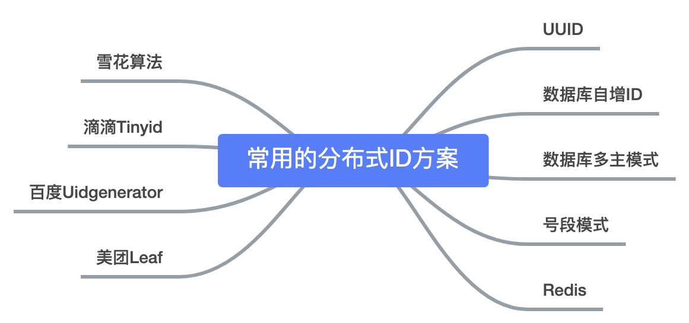
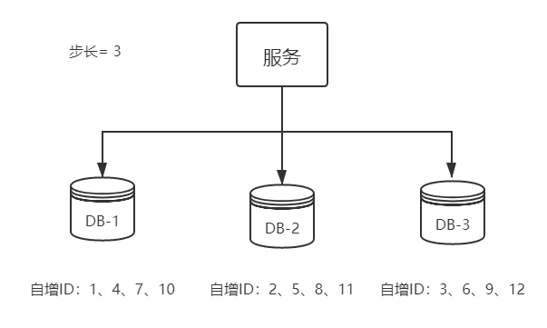
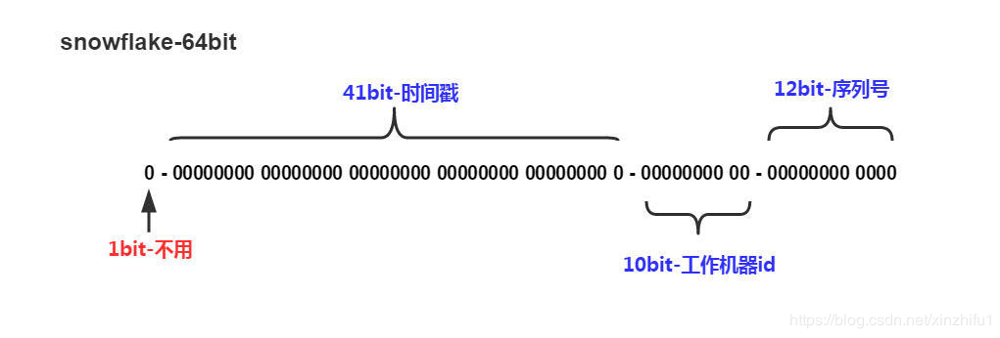
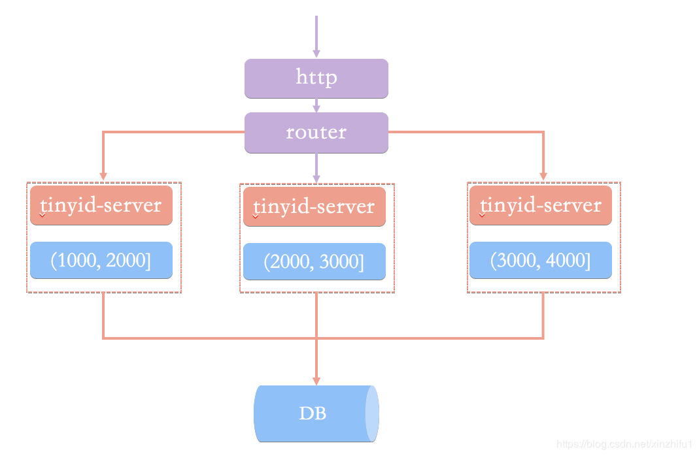

分布式 ID 的 9 种生成方式
为什么要用分布式ID？¶
在说分布式ID的具体实现之前，我们来简单分析一下为什么用分布式ID？分布式ID应该满足哪些特征？
- 什么是分布式ID？
拿MySQL数据库举个栗子：
在我们业务数据量不大的时候，单库单表完全可以支撑现有业务，数据再大一点搞个MySQL主从同步读写分离也能对付。
但随着数据日渐增长，主从同步也扛不住了，就需要对数据库进行分库分表，但分库分表后需要有一个唯一ID来标识一条数据，数据库的自增ID显然不能满足需求；特别一点的如订单、优惠券也都需要有唯一ID做标识。此时一个能够生成全局唯一ID的系统是非常必要的。那么这个全局唯一ID就叫分布式ID。
-
那么分布式ID需要满足那些条件？
-
全局唯一：必须保证ID是全局性唯一的，基本要求
- 高性能：高可用低延时，ID生成响应要块，否则反倒会成为业务瓶颈
- 高可用：100%的可用性是骗人的，但是也要无限接近于100%的可用性
- 好接入：要秉着拿来即用的设计原则，在系统设计和实现上要尽可能的简单
- 趋势递增：最好趋势递增，这个要求就得看具体业务场景了，一般不严格要求
分布式ID都有哪些生成方式？¶
今天主要分析一下以下9种，分布式ID生成器方式以及优缺点：
- UUID
- 数据库自增ID
- 数据库多主模式
- 号段模式
- Redis
- 雪花算法（SnowFlake）
- 滴滴出品（TinyID）
- 百度 （Uidgenerator）
- 美团（Leaf）
那么它们都是如何实现？以及各自有什么优缺点？我们往下看

基于UUID¶
在Java的世界里，想要得到一个具有唯一性的ID，首先被想到可能就是UUID，毕竟它有着全球唯一的特性。那么UUID可以做分布式ID吗？答案是可以的，但是并不推荐！
public static void main(String[] args) {
String uuid = UUID.randomUUID().toString().replaceAll("-","");
System.out.println(uuid);
}
UUID的生成简单到只有一行代码，输出结果 c2b8c2b9e46c47e3b30dca3b0d447718，但UUID却并不适用于实际的业务需求。像用作订单号UUID这样的字符串没有丝毫的意义，看不出和订单相关的有用信息；而对于数据库来说用作业务主键ID，它不仅是太长还是字符串，存储性能差查询也很耗时，所以不推荐用作分布式ID。
优点：生成足够简单，本地生成无网络消耗，具有唯一性 缺点： - 无序的字符串，不具备趋势自增特性 - 没有具体的业务含义 - 长度过长16 字节128位，36位长度的字符串，存储以及查询对MySQL的性能消耗较大，MySQL官方明确建议主键要尽量越短越好，作为数据库主键 UUID 的无序性会导致数据位置频繁变动，严重影响性能。
基于数据库自增ID¶
基于数据库的auto_increment自增ID完全可以充当分布式ID，具体实现：需要一个单独的MySQL实例用来生成ID，建表结构如下：
CREATE DATABASE `SEQ_ID`;
CREATE TABLE SEQID.SEQUENCE_ID (
id bigint(20) unsigned NOT NULL auto_increment,
value char(10) NOT NULL default '',
PRIMARY KEY (id),
) ENGINE=MyISAM;
insert into SEQUENCE_ID(value) VALUES ('values');
当我们需要一个ID的时候，向表中插入一条记录返回主键ID，但这种方式有一个比较致命的缺点，访问量激增时MySQL本身就是系统的瓶颈，用它来实现分布式服务风险比较大，不推荐！
优点：实现简单，ID单调自增，数值类型查询速度快 缺点：DB单点存在宕机风险，无法扛住高并发场景
基于数据库集群模式¶
前边说了单点数据库方式不可取，那对上边的方式做一些高可用优化，换成主从模式集群。害怕一个主节点挂掉没法用，那就做双主模式集群，也就是两个Mysql实例都能单独的生产自增ID。
那这样还会有个问题，两个MySQL实例的自增ID都从1开始，会生成重复的ID怎么办？
解决方案：设置起始值和自增步长
MySQL_1 配置：
set @@auto_increment_offset = 1; -- 起始值
set @@auto_increment_increment = 2; -- 步长
set @@auto_increment_offset = 2; -- 起始值
set @@auto_increment_increment = 2; -- 步长
1、3、5、7、9 2、4、6、8、10
那如果集群后的性能还是扛不住高并发咋办？就要进行MySQL扩容增加节点，这是一个比较麻烦的事。

可以看出，水平扩展的数据库集群，有利于解决数据库单点压力的问题，同时为了ID生成特性，将自增步长按照机器数量来设置。
增加第三台MySQL实例需要人工修改一、二两台MySQL实例的起始值和步长，把第三台机器的ID起始生成位置设定在比现有最大自增ID的位置远一些，但必须在一、二两台MySQL实例ID还没有增长到第三台MySQL实例的起始ID值的时候，否则自增ID就要出现重复了，必要时可能还需要停机修改。
优点：解决DB单点问题 缺点：不利于后续扩容，而且实际上单个数据库自身压力还是大，依旧无法满足高并发场景。
基于数据库的号段模式¶
号段模式是当下分布式ID生成器的主流实现方式之一，号段模式可以理解为从数据库批量的获取自增ID，每次从数据库取出一个号段范围，例如 (1,1000] 代表1000个ID，具体的业务服务将本号段，生成1~1000的自增ID并加载到内存。表结构如下：
CREATE TABLE id_generator (
id int(10) NOT NULL,
max_id bigint(20) NOT NULL COMMENT '当前最大id',
step int(20) NOT NULL COMMENT '号段的布长',
biz_type int(20) NOT NULL COMMENT '业务类型',
version int(20) NOT NULL COMMENT '版本号',
PRIMARY KEY (`id`)
)
biz_type ：代表不同业务类型
max_id ：当前最大的可用id
step ：代表号段的长度
version ：是一个乐观锁，每次都更新version，保证并发时数据的正确性
id biz_type max_id step version 1 101 1000 2000 0
等这批号段ID用完，再次向数据库申请新号段，对max_id字段做一次update操作，update max_id= max_id + step，update成功则说明新号段获取成功，新的号段范围是(max_id ,max_id +step]。
update id_generator set max_id = #{max_id+step}, version = version + 1 where version = # {version} and biz_type = XXX
由于多业务端可能同时操作，所以采用版本号version乐观锁方式更新，这种分布式ID生成方式不强依赖于数据库，不会频繁的访问数据库，对数据库的压力小很多。
基于Redis模式¶
Redis也同样可以实现，原理就是利用redis的 incr命令实现ID的原子性自增。
127.0.0.1:6379> set seq_id 1 // 初始化自增ID为1
OK
127.0.0.1:6379> incr seq_id // 增加1，并返回递增后的数值
(integer) 2
用redis实现需要注意一点，要考虑到redis持久化的问题。redis有两种持久化方式RDB和AOF
RDB会定时打一个快照进行持久化，假如连续自增但redis没及时持久化，而这会Redis挂掉了，重启Redis后会出现ID重复的情况。
AOF会对每条写命令进行持久化，即使Redis挂掉了也不会出现ID重复的情况，但由于incr命令的特殊性，会导致Redis重启恢复的数据时间过长。
基于雪花算法（Snowflake）模式¶
雪花算法（Snowflake）是twitter公司内部分布式项目采用的ID生成算法，开源后广受国内大厂的好评，在该算法影响下各大公司相继开发出各具特色的分布式生成器。

Snowflake生成的是Long类型的ID，一个Long类型占8个字节，每个字节占8比特，也就是说一个Long类型占64个比特。
Snowflake ID组成结构：正数位（占1比特）+ 时间戳（占41比特）+ 机器ID（占5比特）+ 数据中心（占5比特）+ 自增值（占12比特），总共64比特组成的一个Long类型。
第一个bit位（1bit）：Java中long的最高位是符号位代表正负，正数是0，负数是1，一般生成ID都为正数，所以默认为0。 时间戳部分（41bit）：毫秒级的时间，不建议存当前时间戳，而是用（当前时间戳 - 固定开始时间戳）的差值，可以使产生的ID从更小的值开始；41位的时间戳可以使用69年，(1L << 41) / (1000L * 60 * 60 * 24 * 365) = 69年 工作机器id（10bit）：也被叫做workId，这个可以灵活配置，机房或者机器号组合都可以。 序列号部分（12bit），自增值支持同一毫秒内同一个节点可以生成4096个ID 根据这个算法的逻辑，只需要将这个算法用Java语言实现出来，封装为一个工具方法，那么各个业务应用可以直接使用该工具方法来获取分布式ID，只需保证每个业务应用有自己的工作机器id即可，而不需要单独去搭建一个获取分布式ID的应用。
Java版本的Snowflake算法实现：
/**
* Twitter的SnowFlake算法,使用SnowFlake算法生成一个整数，然后转化为62进制变成一个短地址URL
*
* https://github.com/beyondfengyu/SnowFlake
*/
public class SnowFlakeShortUrl {
/**
* 起始的时间戳
*/
private final static long START_TIMESTAMP = 1480166465631L;
/**
* 每一部分占用的位数
*/
private final static long SEQUENCE_BIT = 12; //序列号占用的位数
private final static long MACHINE_BIT = 5; //机器标识占用的位数
private final static long DATA_CENTER_BIT = 5; //数据中心占用的位数
/**
* 每一部分的最大值
*/
private final static long MAX_SEQUENCE = -1L ^ (-1L << SEQUENCE_BIT);
private final static long MAX_MACHINE_NUM = -1L ^ (-1L << MACHINE_BIT);
private final static long MAX_DATA_CENTER_NUM = -1L ^ (-1L << DATA_CENTER_BIT);
/**
* 每一部分向左的位移
*/
private final static long MACHINE_LEFT = SEQUENCE_BIT;
private final static long DATA_CENTER_LEFT = SEQUENCE_BIT + MACHINE_BIT;
private final static long TIMESTAMP_LEFT = DATA_CENTER_LEFT + DATA_CENTER_BIT;
private long dataCenterId; //数据中心
private long machineId; //机器标识
private long sequence = 0L; //序列号
private long lastTimeStamp = -1L; //上一次时间戳
private long getNextMill() {
long mill = getNewTimeStamp();
while (mill <= lastTimeStamp) {
mill = getNewTimeStamp();
}
return mill;
}
private long getNewTimeStamp() {
return System.currentTimeMillis();
}
/**
* 根据指定的数据中心ID和机器标志ID生成指定的序列号
*
* @param dataCenterId 数据中心ID
* @param machineId 机器标志ID
*/
public SnowFlakeShortUrl(long dataCenterId, long machineId) {
if (dataCenterId > MAX_DATA_CENTER_NUM || dataCenterId < 0) {
throw new IllegalArgumentException("DtaCenterId can't be greater than MAX_DATA_CENTER_NUM or less than 0！");
}
if (machineId > MAX_MACHINE_NUM || machineId < 0) {
throw new IllegalArgumentException("MachineId can't be greater than MAX_MACHINE_NUM or less than 0！");
}
this.dataCenterId = dataCenterId;
this.machineId = machineId;
}
/**
* 产生下一个ID
*
* @return
*/
public synchronized long nextId() {
long currTimeStamp = getNewTimeStamp();
if (currTimeStamp < lastTimeStamp) {
throw new RuntimeException("Clock moved backwards. Refusing to generate id");
}
if (currTimeStamp == lastTimeStamp) {
//相同毫秒内，序列号自增
sequence = (sequence + 1) & MAX_SEQUENCE;
//同一毫秒的序列数已经达到最大
if (sequence == 0L) {
currTimeStamp = getNextMill();
}
} else {
//不同毫秒内，序列号置为0
sequence = 0L;
}
lastTimeStamp = currTimeStamp;
return (currTimeStamp - START_TIMESTAMP) << TIMESTAMP_LEFT //时间戳部分
| dataCenterId << DATA_CENTER_LEFT //数据中心部分
| machineId << MACHINE_LEFT //机器标识部分
| sequence; //序列号部分
}
public static void main(String[] args) {
SnowFlakeShortUrl snowFlake = new SnowFlakeShortUrl(2, 3);
for (int i = 0; i < (1 << 4); i++) {
//10进制
System.out.println(snowFlake.nextId());
}
}
}
百度（uid-generator）¶
uid-generator是由百度技术部开发，项目GitHub地址 https://github.com/baidu/uid-generator
uid-generator是基于Snowflake算法实现的，与原始的snowflake算法不同在于，uid-generator支持自定义时间戳、工作机器ID和 序列号 等各部分的位数，而且uid-generator中采用用户自定义workId的生成策略。
uid-generator需要与数据库配合使用，需要新增一个WORKER_NODE表。当应用启动时会向数据库表中去插入一条数据，插入成功后返回的自增ID就是该机器的workId数据由host，port组成。
对于uid-generator ID组成结构：
workId，占用了22个bit位，时间占用了28个bit位，序列化占用了13个bit位，需要注意的是，和原始的snowflake不太一样，时间的单位是秒，而不是毫秒，workId也不一样，而且同一应用每次重启就会消费一个workId。
参考文献 https://github.com/baidu/uid-generator/blob/master/README.zh_cn.md
美团（Leaf）¶
Leaf由美团开发，github地址：https://github.com/Meituan-Dianping/Leaf
Leaf同时支持号段模式和snowflake算法模式，可以切换使用。
号段模式
先导入源码 https://github.com/Meituan-Dianping/Leaf ，在建一张表leaf_alloc
DROP TABLE IF EXISTS `leaf_alloc`;
CREATE TABLE `leaf_alloc` (
`biz_tag` varchar(128) NOT NULL DEFAULT '' COMMENT '业务key',
`max_id` bigint(20) NOT NULL DEFAULT '1' COMMENT '当前已经分配了的最大id',
`step` int(11) NOT NULL COMMENT '初始步长，也是动态调整的最小步长',
`description` varchar(256) DEFAULT NULL COMMENT '业务key的描述',
`update_time` timestamp NOT NULL DEFAULT CURRENT_TIMESTAMP ON UPDATE CURRENT_TIMESTAMP COMMENT '数据库维护的更新时间',
PRIMARY KEY (`biz_tag`)
) ENGINE=InnoDB;
然后在项目中开启号段模式，配置对应的数据库信息，并关闭snowflake模式
leaf.name=com.sankuai.leaf.opensource.test
leaf.segment.enable=true
leaf.jdbc.url=jdbc:mysql://localhost:3306/leaf_test?useUnicode=true&characterEncoding=utf8&characterSetResults=utf8
leaf.jdbc.username=root
leaf.jdbc.password=root
leaf.snowflake.enable=false
#leaf.snowflake.zk.address=
#leaf.snowflake.port=
启动leaf-server 模块的 LeafServerApplication项目就跑起来了
号段模式获取分布式自增ID的测试url ：http：//localhost：8080/api/segment/get/leaf-segment-test
监控号段模式：http://localhost:8080/cache
snowflake模式 Leaf的snowflake模式依赖于ZooKeeper，不同于原始snowflake算法也主要是在workId的生成上，Leaf中workId是基于ZooKeeper的顺序Id来生成的，每个应用在使用Leaf-snowflake时，启动时都会都在Zookeeper中生成一个顺序Id，相当于一台机器对应一个顺序节点，也就是一个workId。
leaf.snowflake.enable=true
leaf.snowflake.zk.address=127.0.0.1
leaf.snowflake.port=2181
snowflake模式获取分布式自增ID的测试url：http://localhost:8080/api/snowflake/get/test
滴滴（Tinyid）¶
Tinyid由滴滴开发，Github地址：https://github.com/didi/tinyid。
Tinyid是基于号段模式原理实现的与Leaf如出一辙，每个服务获取一个号段（1000,2000]、（2000,3000]、（3000,4000]

Tinyid提供http和tinyid-client两种方式接入
Http方式接入
（1）导入Tinyid源码：
git clone https://github.com/didi/tinyid.git
（2）创建数据表：
CREATE TABLE `tiny_id_info` (
`id` bigint(20) unsigned NOT NULL AUTO_INCREMENT COMMENT '自增主键',
`biz_type` varchar(63) NOT NULL DEFAULT '' COMMENT '业务类型，唯一',
`begin_id` bigint(20) NOT NULL DEFAULT '0' COMMENT '开始id，仅记录初始值，无其他含义。初始化时begin_id和max_id应相同',
`max_id` bigint(20) NOT NULL DEFAULT '0' COMMENT '当前最大id',
`step` int(11) DEFAULT '0' COMMENT '步长',
`delta` int(11) NOT NULL DEFAULT '1' COMMENT '每次id增量',
`remainder` int(11) NOT NULL DEFAULT '0' COMMENT '余数',
`create_time` timestamp NOT NULL DEFAULT '2010-01-01 00:00:00' COMMENT '创建时间',
`update_time` timestamp NOT NULL DEFAULT '2010-01-01 00:00:00' COMMENT '更新时间',
`version` bigint(20) NOT NULL DEFAULT '0' COMMENT '版本号',
PRIMARY KEY (`id`),
UNIQUE KEY `uniq_biz_type` (`biz_type`)
) ENGINE=InnoDB AUTO_INCREMENT=1 DEFAULT CHARSET=utf8 COMMENT 'id信息表';
CREATE TABLE `tiny_id_token` (
`id` int(11) unsigned NOT NULL AUTO_INCREMENT COMMENT '自增id',
`token` varchar(255) NOT NULL DEFAULT '' COMMENT 'token',
`biz_type` varchar(63) NOT NULL DEFAULT '' COMMENT '此token可访问的业务类型标识',
`remark` varchar(255) NOT NULL DEFAULT '' COMMENT '备注',
`create_time` timestamp NOT NULL DEFAULT '2010-01-01 00:00:00' COMMENT '创建时间',
`update_time` timestamp NOT NULL DEFAULT '2010-01-01 00:00:00' COMMENT '更新时间',
PRIMARY KEY (`id`)
) ENGINE=InnoDB AUTO_INCREMENT=1 DEFAULT CHARSET=utf8 COMMENT 'token信息表';
INSERT INTO `tiny_id_info` (`id`, `biz_type`, `begin_id`, `max_id`, `step`, `delta`, `remainder`, `create_time`, `update_time`, `version`)
VALUES
(1, 'test', 1, 1, 100000, 1, 0, '2018-07-21 23:52:58', '2018-07-22 23:19:27', 1);
INSERT INTO `tiny_id_info` (`id`, `biz_type`, `begin_id`, `max_id`, `step`, `delta`, `remainder`, `create_time`, `update_time`, `version`)
VALUES
(2, 'test_odd', 1, 1, 100000, 2, 1, '2018-07-21 23:52:58', '2018-07-23 00:39:24', 3);
INSERT INTO `tiny_id_token` (`id`, `token`, `biz_type`, `remark`, `create_time`, `update_time`)
VALUES
(1, '0f673adf80504e2eaa552f5d791b644c', 'test', '1', '2017-12-14 16:36:46', '2017-12-14 16:36:48');
INSERT INTO `tiny_id_token` (`id`, `token`, `biz_type`, `remark`, `create_time`, `update_time`)
VALUES
(2, '0f673adf80504e2eaa552f5d791b644c', 'test_odd', '1', '2017-12-14 16:36:46', '2017-12-14 16:36:48');
（3）配置数据库：
datasource.tinyid.names=primary
datasource.tinyid.primary.driver-class-name=com.mysql.jdbc.Driver
datasource.tinyid.primary.url=jdbc:mysql://ip:port/databaseName?autoReconnect=true&useUnicode=true&characterEncoding=UTF-8
datasource.tinyid.primary.username=root
datasource.tinyid.primary.password=123456
（4）启动tinyid-server后测试
获取分布式自增ID: http://localhost:9999/tinyid/id/nextIdSimple?bizType=test&token=0f673adf80504e2eaa552f5d791b644c'
返回结果: 3
批量获取分布式自增ID:
http://localhost:9999/tinyid/id/nextIdSimple?bizType=test&token=0f673adf80504e2eaa552f5d791b644c&batchSize=10'
返回结果: 4,5,6,7,8,9,10,11,12,13